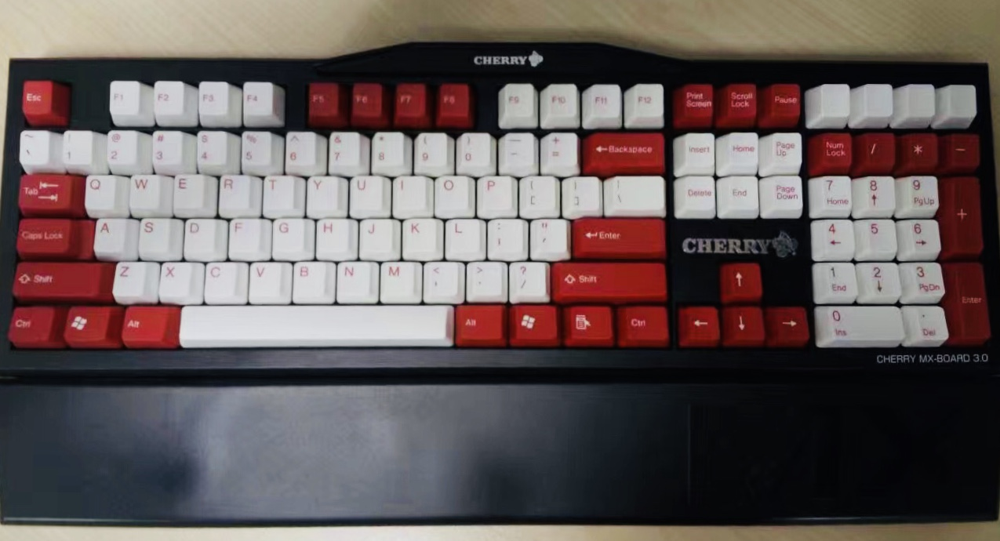
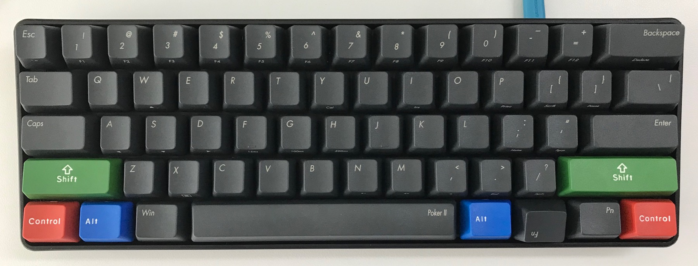
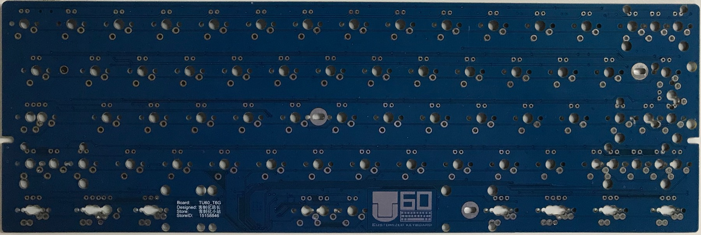
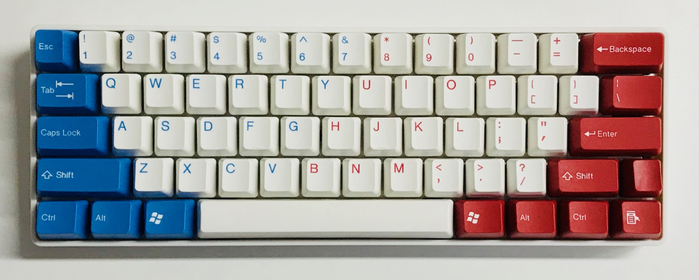
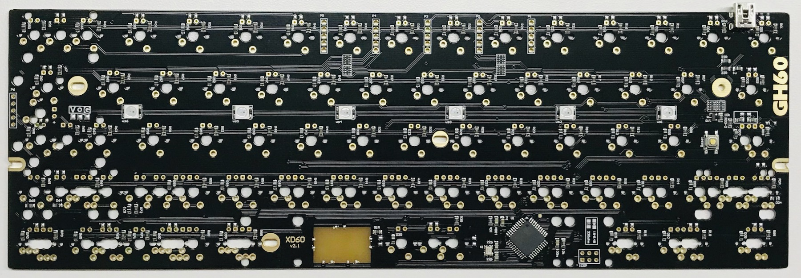
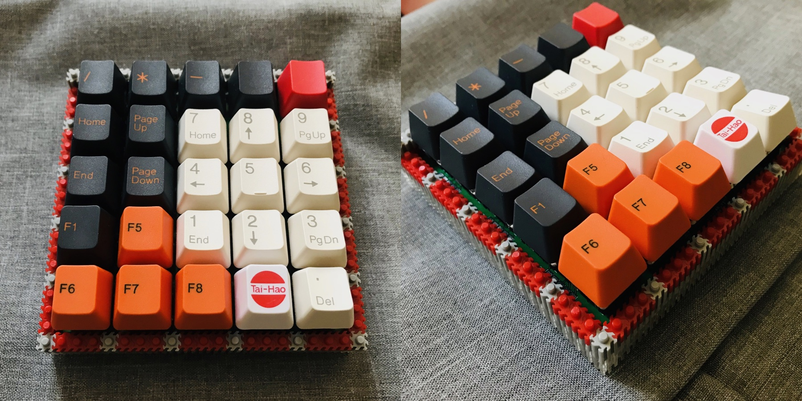

My Mechanical Keyboards
My very first impression of a mechanical keyboard is a clunky ISO layout IBM keyboard on which I learned touch typing, I can still remember it was full of noise like rusty sprints. Then suddenly, the whole world is dominated by membrane keyboards for its low cost and quiet experience.
As a fan of keyboards and mice. I owned Logitech mice M505, M525, and M545, guess what? I only paid the first one, they kept broken within the warranty and got replaced. Well, for keyboards, at least 2 were killed by coffee. Luckily, I always use an external keyboard for laptop because I do not like the shorter key travel distance of laptop keyboards. Otherwise, the coffee would be very expensive.
Then the mechanical keyboards came back!
The Keyboards I Bought
Cherry MX 3.0 G80-3850 Brown
It is a very basic keyboard with a sturdy build, most importantly it is affordable for me 2014. The original low profile keycaps were replaced.

IKBC Poker II
I was looking for a mac compatible mechanical keyboard, there are not many choices. Then I came across this “programmable” keyboard, mission accomplished! It took nearly 3 days to deliver, trust me, this is very slow in China. I cannot wait to program it, and turned out a lot of keys are not programmable. With the guide from customer service, I upgraded to a beta firmware, but still not able to fully swap the Win and Alt key, so I returned it. The keyboard has a very solid build, but the firmware is really sloppy.

The Keyboards I Built
So I kept looking for a new keyboard for mac, the concept of Custom Keyboard gradually appeared to me.
Kudos for Michał Trybus and his GH60 Programmable Keyboard!
GH60 Compatible PCBs
Ordering a PCB from a manufacturer must be expensive, I thought. It does not take much time to build my first 2 keyboards from GH60 compatible PCBs.
The community is very small but everyone is nice and willing to help, special thanks to Fengz and all the folks from TU community.
TU60
With Captain America keycap set  
XD60 by Xiudi (Shy boy in Chinese)
With Carbon keycap set


Not Only 60%
And a lot more
Fengz This Fengz (sounds like an insane guy in Chinese) made a lot of keyboards.
40% Keyboards A lot of keyboards and PCBs. I made several 5x5 keyboards using the open source design.
My 5x5 keyboard. 
A traffic light toy made of 5x5 for my son. (The video was taken in the night, the shining LEDs are actually quite soft.)
The story will never end!